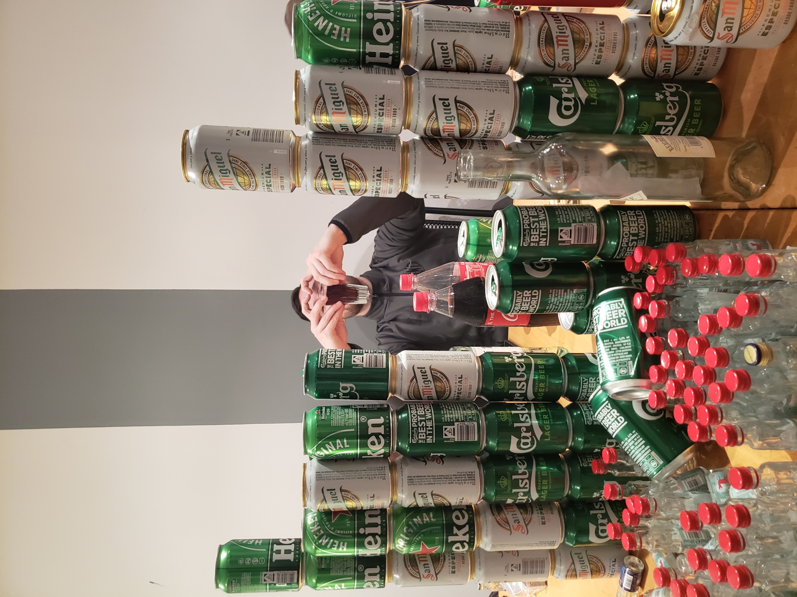

Raina
Meine liebe Gunda, 70 Jahre sind vergangen, seitdem wir uns kennengelernt haben. Zuerst Diesterwegschule, dann Elisabethenschule – danach aus den Augen verloren und durch Heini wiedergefunden,
ungefähr 55 Jahre enge Freundschaft. Wie schön! Möge es noch lange so bleiben. Voller Dankbarkeit dafür und weiterhin alles Glück dieser Erde! Von Herzen Deine Reina

Bene und Verena
Wenn sich zwei wie ihr verbinden
Was wir alle prima finden
Weil ihr ein so tolles Paar
Wünscht man Glück für 100 Jahr
Raina
Meine liebe Gunda, 70 Jahre sind vergangen, seitdem wir uns kennengelernt haben. Zuerst Diesterwegschule, dann Elisabethenschule – danach aus den Augen verloren und durch Heini wiedergefunden,
ungefähr 55 Jahre enge Freundschaft. Wie schön! Möge es noch lange so bleiben. Voller Dankbarkeit dafür und weiterhin alles Glück dieser Erde! Von Herzen Deine Reina

Ute und Willy
Liebe Gunda,
Schön 80 und immer noch so jung wie damals in Chile, voller Reiselust und eine gute, treue Freundin.
Wie haben so schöne gemeinsame Erinnerungen! Und die schwierige Zeit in Chile haben wir gut überstanden.
Es ist immer eine grosse Freude, Dich und Heini hier zu sehen. Hoffentlich kann das noch mehrmals geschehen.
Möge deine schöne Familie gesund, fröhlich und glücklich sein, und Dich viele Jahre geniessen können.
Ganz herzliche Glückwünsche, Ute und Willy
Klick HERE um alle Videos zu sehen.

{kind=link}